Introduction
The transfer of data in large volumes and reliable connections over time became a necessity that experts in this field have had to meet.
Large companies, institutions of different kinds, organizations and others, allocate many of their resources (human, economic, technological,
etc.) to the research that leads to the development of high performance and capacity technologies [1]. Wireless networks with 802.11 protocol
went from being an alternative solution in areas of difficult access where wired-type technologies were unfeasible due to their complexity, to
be an option that provides solutions in different environments, with the highest standards of quality and reliability thanks to the constant
evolution that it presents [2].
Wireless networks play an important role in the field of connectivity, due to the benefits related to mobility, availability, speed and low cost
of implementation [3]. These types of networks are mainly made up of the use of concentrating devices called Access Point (AP), which allow users
to connect wirelessly within a limited area, which is why the proliferation of AP is increasing due to the need for more connection coverage.
Currently, two unlicensed frequency spectrum bands are available for use in the IEEE 802.11 WLAN standard: 2.4 GHz assigned to the ISM (Industrial
Scientific Medical) and 5GHz bands corresponding to the U-NII (Unlicensed National bands) Information Infrastructure). While the IEEE
802.11b / g standard operates in the 2.4 GHz band, the IEEE 802.11a standard makes use of the 5 GHz band. The number of available channels may vary
from one country to another due to the regulations of each in relation to the assignment of the radio spectrum [4]. Additionally, the IEEE 802.11
specifies a spectral mask that defines the permitted distribution of energy through each channel.
In Colombia, the last decade has been characterized by a massive expansion of 802.11 in both simple home or office applications with low
transmission levels and indoor environments, as well as in large business applications with MAN or WAN type network infrastructure
in mixed environments (indoor and / or outdoor) that require transmitting different types of traffic with capacities up to the order of Gbps and
without any errors and cuts in communication [5]. The evolution in telecommunications in our country is supported by the need for massification
of the Internet as a tool for social and economic development in all sectors; being the Live Digital Plan a government flag project whose main
objective is the reduction of unemployment, poverty reduction and increase in global competitiveness.
Due to the increase in the density of APs in WLAN networks, problems related to their performance have been found, which may be the result of lack
of policies for user management, about traffic load in AP, inadequate selection of frequencies between channels, electromagnetic interference, among
other aspects; generating that the APs are not able to attend the required volumes of traffic in an adequate way in order to offer adequate levels
of QoS (Quality of Service) to the users who need to make use of this service [6]. In this scenario, WLAN networks are unable to harness their full
potential. However, the incorporation of policies for intelligent management of radio resources RRM (Radio Resource Management), could be applied to
minimize the harmful effects of interference and a non-uniform load distribution, according to studies conducted by Arunesh Mishra, Hector Velayos [7].
This article seeks to analyze the behavior of a WISP network with a previously operational infrastructure and generate an empirical
model that evaluates the performance of this type of networks, evaluating parameters such as Throughput and Transmission Delay of communication
between stations. and the Access Point, whose data is collected experimentally by injecting random data.
Methodology
A fundamental aspect in the design of experiments is to decide which tests or treatments are going to be executed in the process and the amount of
repetitions of each one, so that the maximum information is obtained at the minimum cost on the object of study. The arrangement constituted by the
different process conditions that will be executed, including the repetitions is called the “design matrix” [8].
An experimental design is more than a set of test conditions: it is a sequence of stages or activities that must be performed to successfully achieve
the objectives pursued. Currently, there are several types of experimental designs where each of them allows to study situations that occur in practical
life, adjusting to the needs of the researcher. It is very important to know how to choose the most suitable for the problem you want to solve [9].
Parameters of interest to evaluate the performance of a network
In any type of networks and especially in wireless networks (due to their sensitivity in the transmission medium) it is very important to know the
quality of communication. For this it is necessary to make an analysis of the network and thus determine its performance. In the present study, basic
factors such as: Throughput and delay will be taken into account.
Throughput: It is the most relevant parameter when analyzing the performance of a data network. It is defined as the relationship between useful
information and the transmission time of the communication [10].
The mathematical expression is given by:
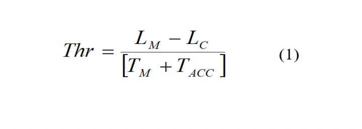
Where,
LM: Total message length
LC: Message Control Bits
TM: Message transmission time
TACC: Media access time
Delay: The delay obtained is calculated as the average of the differences between the shipping and receiving times of the packages. For the purposes
of sampling, the value of “Standard Deviation of Delay” (σ) is taken which is calculated according to the following expression [11]:
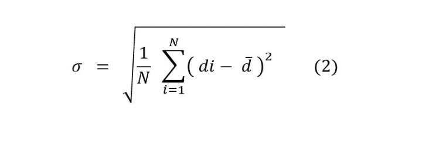
Where,
N: Number of packages considered
di: Package Delay i
d ̅: Average delay of packages
The experimental design selected is of the factorial type, whose objective is to study the effect of several factors on one or several responses.
That is, what is sought is to study the relationship between the factors and the response, in order to know better how this relationship is and
generate knowledge that allows actions and decisions to be taken that improve the performance of the process. To identify the way in which each
factor influences the variable of interest, it is necessary to choose at least two test levels for each of them. With the complete factorial
design, all possible combinations that can be formed with the selected levels are randomly run in the process [12]. In the end, it is expected
to define the influence that one or more input factors have on the output or response variable, looking for tools that represent important
information and allow to evaluate the performance of a WISP wireless network.
Devices used and technical aspects
For the development of the tests in the proposed investigation, CPE Ubiquiti brand model Nanostation M series, Access Point brand Ubiquiti model
Rocket series, Ubiquiti brand antenna model M series, mainly laptops were used. Figures 1, 2 and 3 as well as tables 1,2 and 3 illustrate the
physical appearance and technical specifications of the Access Point, Antennas and CPEs used during the experiment respectively.
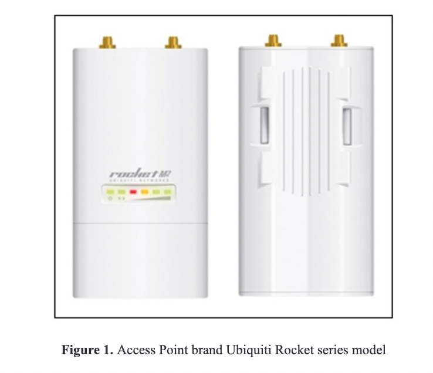
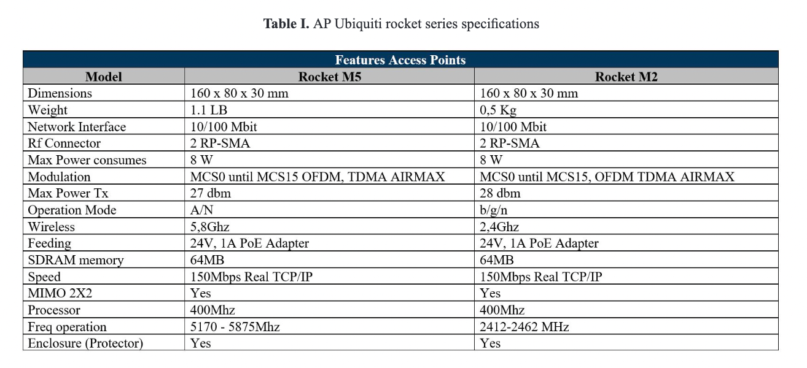
To perform the tests, Ubiquiti brand antennas were used at frequencies of 2.4Ghz and 5.8Ghz. The models used were AM-5G20-90 and AM-2G15-120
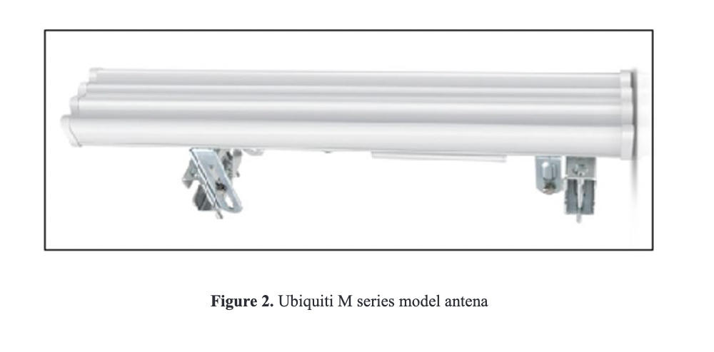
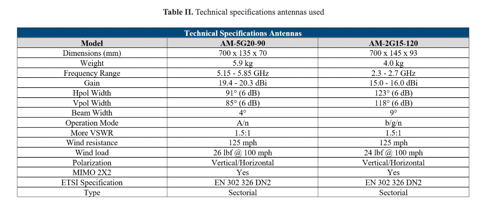
The CPEs used were Ubiquiti brand model Nanostation M.
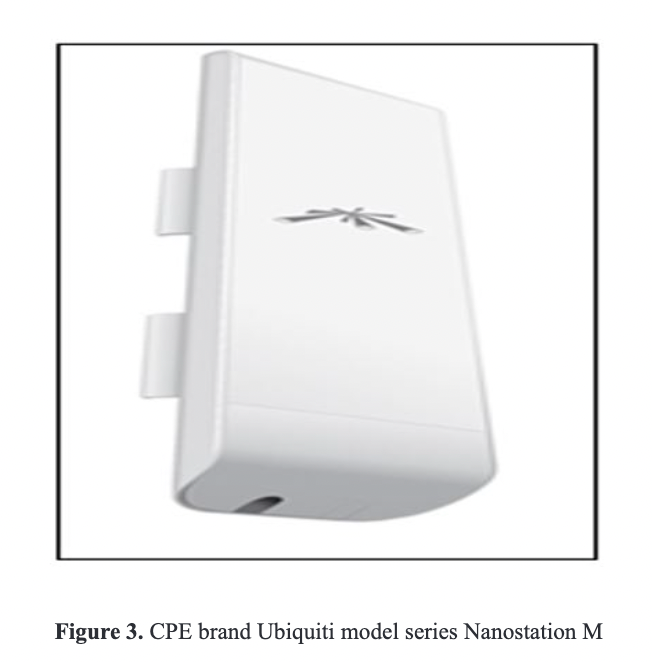
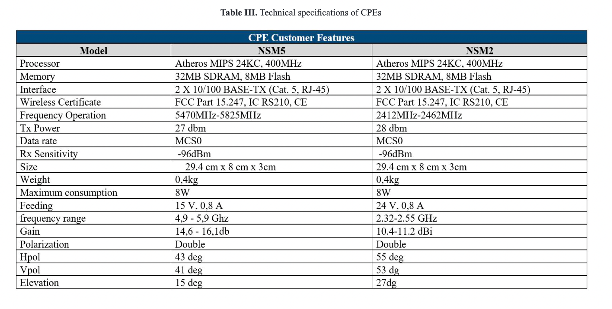
Experiment Description
Currently in the market of computer networks there are different kinds of software such as: IPERF, DITG, MGEN, among others, which provide the
possibility of generating artificial traffic, simulating the behavior of certain types of data; however, for the present project it was decided to
make measurements with real traffic generated from a server (located in the distribution node), where a file was housed to perform the respective
download tests with limited speed only by the capacity of the channel or medium of transmission (wireless medium).
To establish an infrastructure-type wireless communication between two terminals, at least one device that acts as an access point and the
corresponding terminals is required. In the case of study, the infrastructure described in Figure 4 is available to perform the respective tests
and measurements [13].
The experiment consists of connecting a UBIQUITI brand CPE type wireless test device, model NM2 or NM5 to the existing UBIQUITI brand access
points, model ROCKET M2 or M5, at a certain distance. The connection mechanism between the host (user) and the server is done with an architecture
where the terminal is configured in station-router mode and the access point in AP-Bridge mode acting transparently thanks to the WDS (Wireless
distribution system) protocol).Figure 4. WISP TopologyEach experimental sample consists of connecting a test CPE device to the corresponding access
point in the places already strategically defined with the established distances; Once the connection has been made, the download of the file hosted
on the server is started, the time measurement is taken from the start of the download until it ends. Each measurement is taken from the average of
five repetitions looking for greater reliability in the data obtained. The measurement of the total download time of the file and its size were taken
as a reference for the throughput measurement; using equation (3) to obtain the desired parameter value.The factors and levels considered in the
development of the experiment are presented in Table IV:
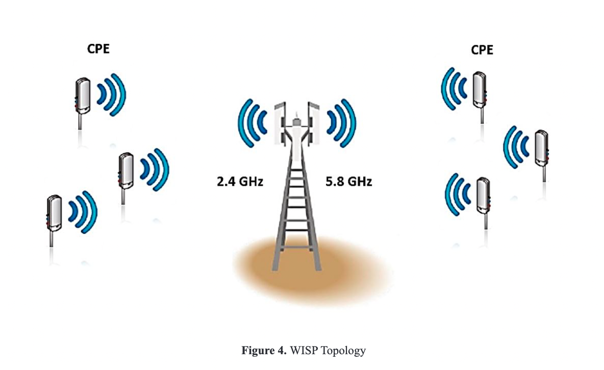
Each experimental sample consists of connecting a test CPE device to the corresponding access point in the places already strategically defined with
the established distances; Once the connection has been made, the download of the file hosted on the server is started, the time measurement is taken
from the start of the download until it ends. Each measurement is taken from the average of five repetitions looking for greater reliability in the
data obtained. The measurement of the total download time of the file and its size were taken as a reference for the throughput measurement; using
equation (3) to obtain the desired parameter value.
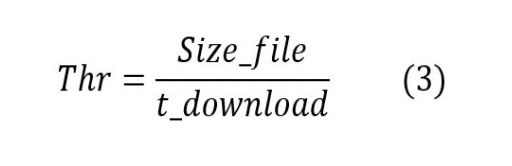
The factors and levels considered in the development of the experiment are presented in Table IV:
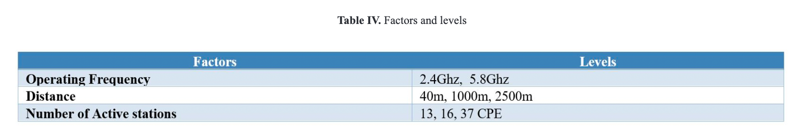
In relation to the data presented in the previous table, a mixed factorial design of 2 x 3 x 3 = 18 combinations of treatments or experimental samples
is chosen. The number of replications of the experiment is five (5), which represents a total of 18 x 5 = 90 measurements for each output or response
variable, data sufficiently reliable to obtain results of the effects of each main factor and each of its interactions.
Results
With the data collection obtained previously, the choice of a statistical mathematical technique that allows to infer reliably on the behavior of a
WISP network will continue. For this purpose the analysis of variance (ANOVA) will be taken as a tool. In the present investigation, more than one
particular factor is studied and the influence that one may have with each other, taking into account this type of conditions it is necessary to
perform a factorial design [14]. In general, factorial designs are the most efficient for this type of experiments. By factorial design it is
understood that in each test or complete replica of the experiment, all possible combinations of the factor levels are investigated. The effect of a
factor is defined as the change in response produced by a change in factor level.
Design matrix product of sampling campaigns
Tables V and VI show the design matrix for Throughput and download delay respectively, according to the results obtained during the development of
the experiment.
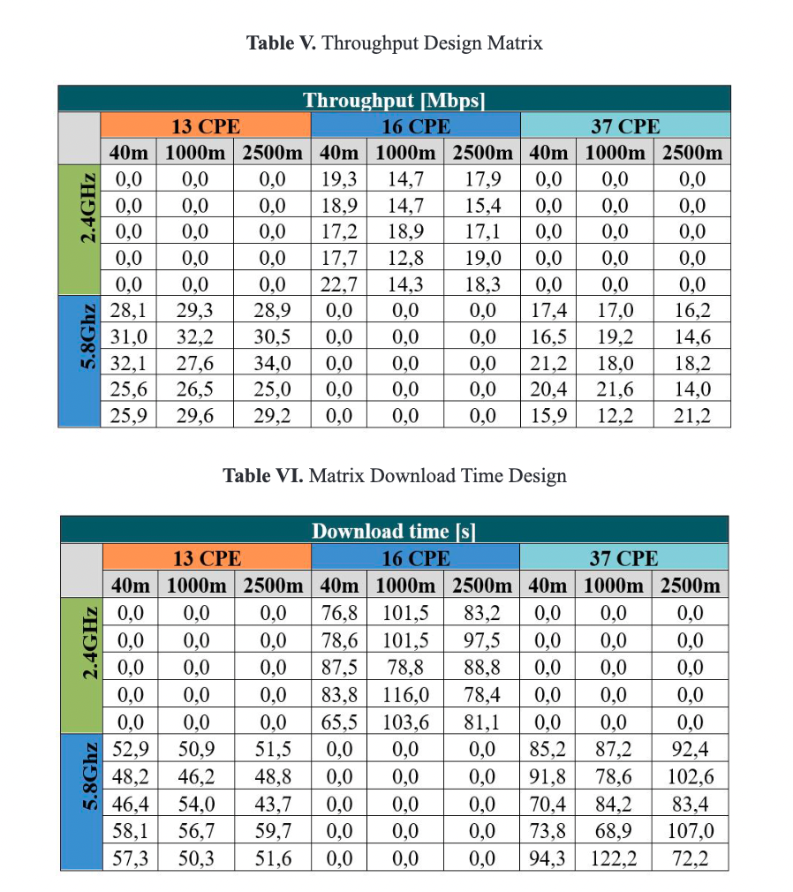
Statistical Model and Analysis of Variance for Throughput
This model is represented by a factorial design of three (3) ABC factors that models the behavior of a response or output variable Y that can be
expressed by: [3]
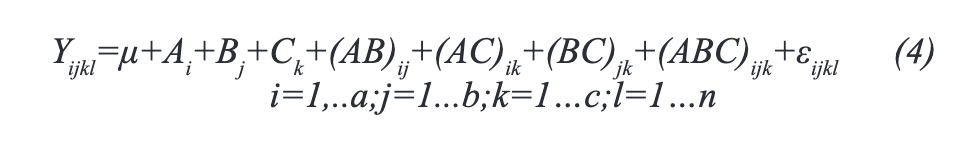
A = operating frequency
B = distance
C = Number CPE
N = Number of replicas of the experiment
Yijkl = Throughput for operating frequency i at a distance between CPE and AP j, with a number of stations(k), for replication l.
μ= General mean without interaction effects
Ai= effect of the i - th level of factor A
Bj= effect of the i - th level of factor B
Ck= effect of the i - th level of factor C
(AB)ij= Effect of the interaction between the factors Frequency and distance
(AC)ik= Effect of the interaction between the factors frequency and amount of CPE
(BC)jk= Effect of the interaction between the factors distance and amount of CPE
(ABC)ijk= Effect of the interaction of the three factors
εijkl= Random error
The factorial study of three factors (A, B, C) allows to investigate the effects: A, B, C, AB, AC, BC and ABC; where the level of breakdown or
detail with which they can be studied depends on the number of levels used in each factor. For the particular case, there are seven interesting
effects without considering breakdown and with them seven null hypotheses (H_o) can be raised and each one paired with an alternative hypothesis
(HA). The ANOVA to test each of these hypotheses is illustrated in table XI.
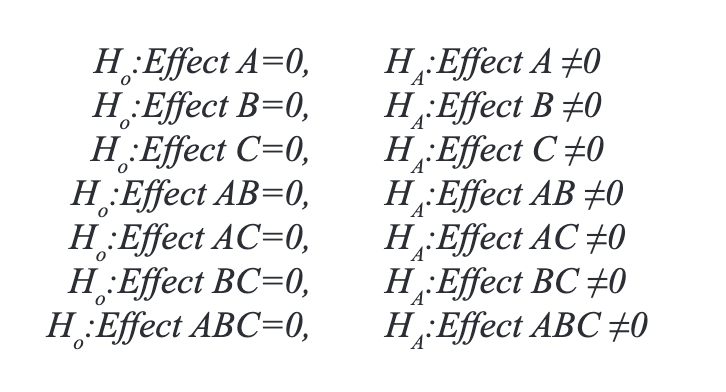
For cases in which all the factors of the experiment are fixed, it is possible to easily formulate and test hypotheses about the main effects
and interactions. In the case of fixed effect models, the tests to test the hypotheses about each main effect and the interactions can be
constructed by dividing the corresponding CM of the effect or the interaction by the CME. The degrees of freedom for each main effect are the
levels of the factor minus one and the number of degrees of freedom for an interaction is the product of the number of degrees of freedom associated
with the individual components of it: [15]
Experimentation procedure:
Dependent variable: THROUGHPUT
Factors:
(A) Operating frequency
(B) Distance
(C) Amount of CPE
Number of experimental samples: 90
Next, the respective variance analysis calculations for Troughput will be carried out, extracting the data reported in Table V. The mathematical equation to determine the correlation factor (FC) is:
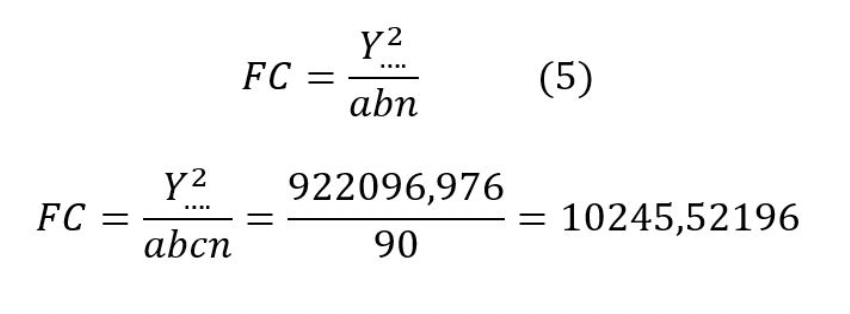
The following expression will be used to calculate the sum of squares (SC):
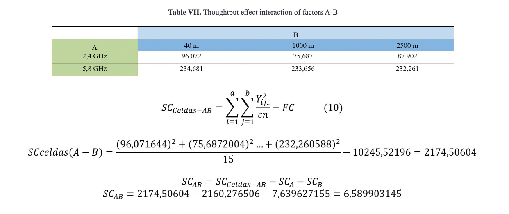
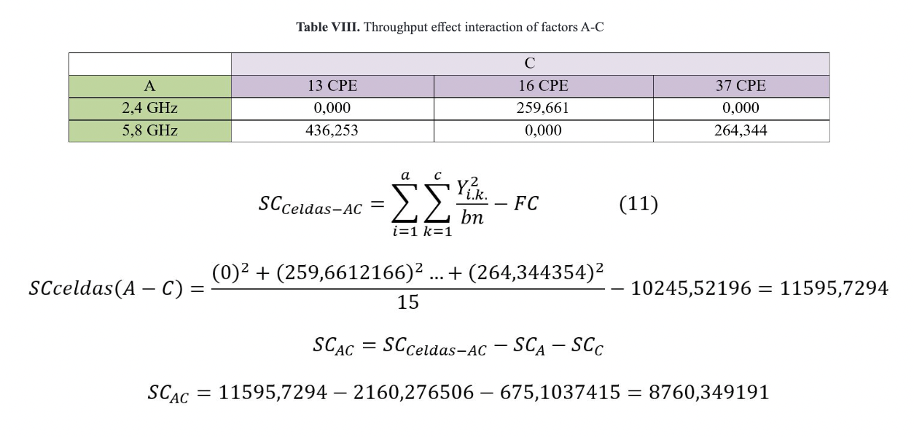
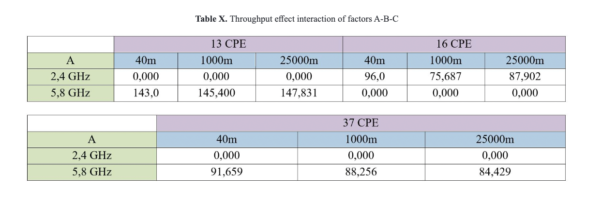
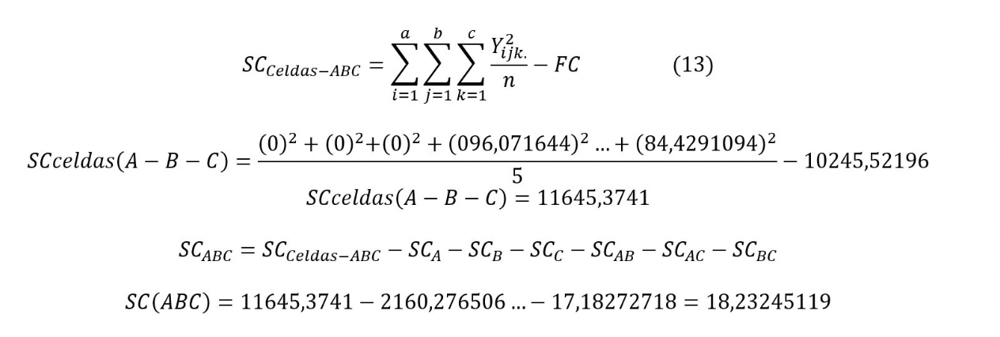
The SCE is determined by the following expression:
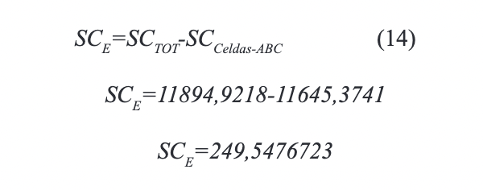
The following table is illustrated in analysis of variance for Throuhgput:
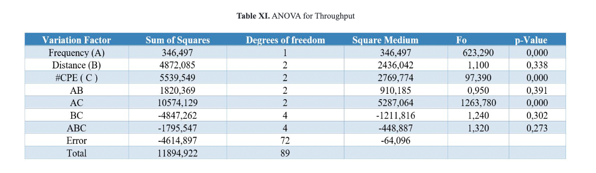
For the effect whose p-value is less than the value specified for α, it is declared statistically significant or said to be active. That is,
those values where p-value <0.05.
The ANOVA table breaks down the variability of THROUGHPUT in contributions due to several factors. Since the sum of Type III squares (default)
has been chosen, the contribution of each factor has been measured by eliminating the effects of the rest of the factors. The p-values verify
the statistical importance of each of the factors. Given that according to the analysis of variance there are three effects with p-values lower
than 0.05 (A, C and AC), these factors have a statistically significant effect on THROUGHPUT for a 95.0% confidence for which the H_o hypothesis
is rejected.
On the other hand, the effects that do not influence the model statistically (B, AB, BC and ABC) could be considered eliminating them by sending
their effects on the model at the end of the error (ε). It is very important to keep in mind that the only statistically significant interaction
between the factors was that corresponding to the AC interaction, which corresponds to the interaction between the frequency factors and number
of CPEs or stations in the network, which is consistent with the mathematical expressions to calculate the value of the Throughput presented above.
Verification of the Assumptions of the Model for Throughput
The validity of the results obtained in any analysis of variance is subject to the assumptions of the model being fulfilled. These assumptions are:
normality, constant variance (equal variance of treatments) and independence. That is, the answer (Y) should be distributed normally, with the same
variance in each treatment and the measurements must be independent. These assumptions about Y are translated into assumptions about the term error
(e) in the model [16].
The assumptions can be checked analytically (mathematically) or graphically, the latter, the most used for its relative simplicity. The graphic form
is not entirely reliable, but enough for real situations to show evidence to accept or deny the assumption. For the denial a marked visual effect that
supports the decision taken is required.
Some points that could leave the normal behavior of an assumption should not be considered as extreme conditions that violate the assumption in
question. These cases can be interpreted as atypical measurements, since they can significantly affect the resulting analyzes.
Normality Assumption
A graphic procedure to verify compliance with the assumption of waste normality consists in plotting the waste on paper or in the normal probability
graph that is included in almost all statistical packages.
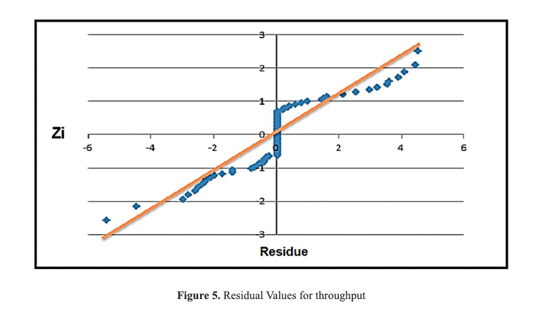
This graph of type X-Y has the scales in such a way that, if the residues follow a normal distribution, when plotting them they tend to be aligned
in a straight line; therefore, if they clearly do not align, it is concluded that the normality assumption is not correct [17].
It should be emphasized that the adjustment of the points to a line does not have to be perfect, since the analysis of variance resists small and
moderate deviations from the normality assumption.
In figure 5, corresponding to the probability graph, it is observed that some residuals do not fit properly to the plotted line; which does not prevent
compliance with the assumption of normality since these data can be considered as atypical without being sensitive in consideration.
Constant Variance Assumption
Materials
Banana (Musa paradisiaca) in an optimum state of ripeness was chosen, that is, bananas with a uniform yellow
color, in which the first black dots are just beginning to appear and in whichthe average total sugar
content should be around 20%.
Conclusions
The application of ultrasound (40 KHz / 130W / 30 ° C / 10, 20 and 30 min) as a pretreatment to the
convective drying of banana samples showed a significant reduction of processing time when compared to the
control sample; reaching the greatest reduction of time of 50% for the treatment subjected to 30 min of US.
The model that best predicts banana drying kinetics with and without the application of US is the
exponential one. According to these results the use of ultrasound would be a potential alternative to reduce
the drying time of bananas and vegetables in general with significant saving of energy.
References
[1] JV. Santacatalina, JA. Cárcel, J. Fernández, A. Mulet, y JV. García, “Impact of applied ultrasonic power
on the lowtemperature drying of apple”,Ultrasonics Sonochemistry, vol.28, pp. 100-109,
2016.https://doi.org/10.1016/j.ultsonch.2015.06.027
[2] C. ErtekinandO. Yaldiz, “Drying of eggplant and selection of a suitable thin layer drying
model”,Journalof Food Engineering, vol.63,no. 3, pp. 349-359, 2004.
https://doi.org/10.1016/j.jfoodeng.2003.08.007
[3] L. Mayor and A.M. Sereno, “Modelling shrinkage during convective drying of food materials: a
review”,Journal of Food Engineering, vol.61, no. 3, pp. 373-386, 2004.
https://doi.org/10.1016/S0260-8774(03)00144-4

 Doctor en Ingeniería – área Telecomunicaciones,
juan.vesga@unad.edu.co.
Doctor en Ingeniería – área Telecomunicaciones,
juan.vesga@unad.edu.co.
 ORCID:
0000-0003-3764-7265.
Universidad Nacional Abierta y a Distancia, Colombia.
ORCID:
0000-0003-3764-7265.
Universidad Nacional Abierta y a Distancia, Colombia.